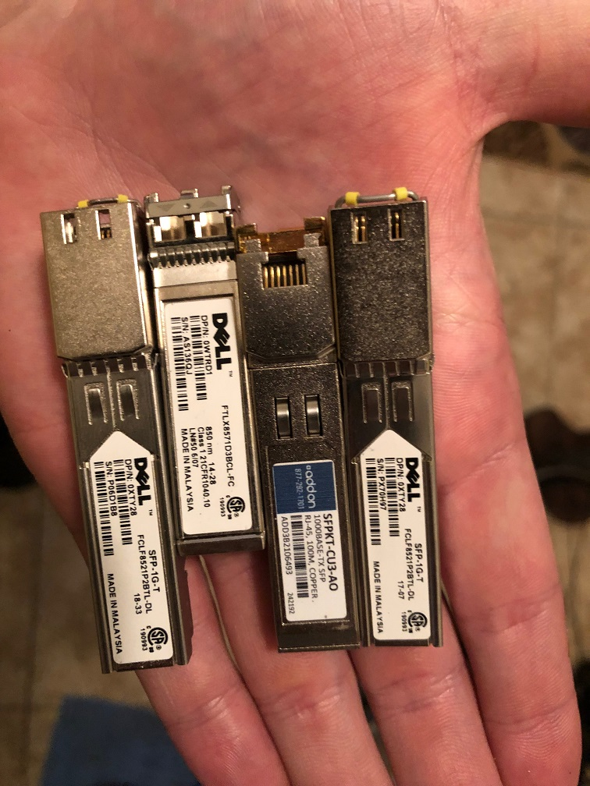
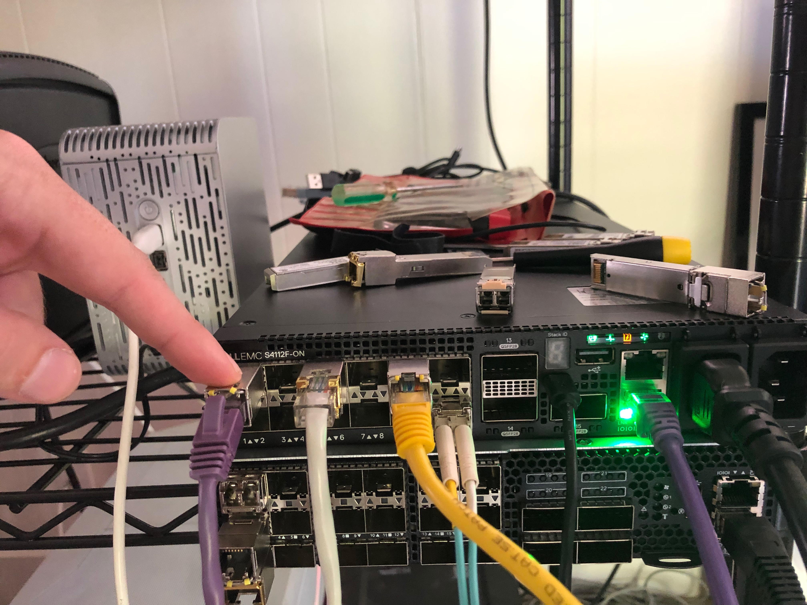
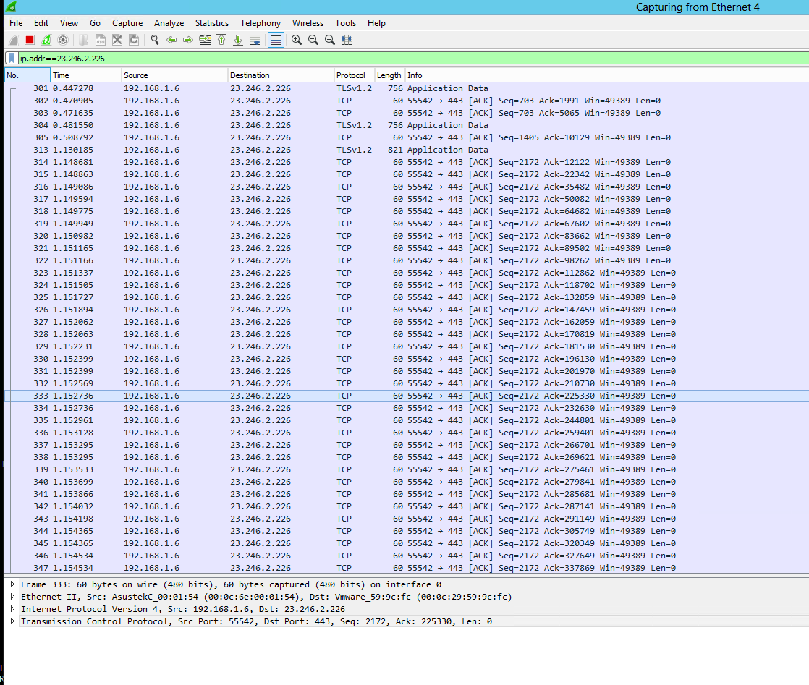
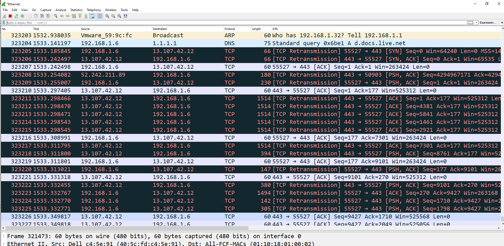
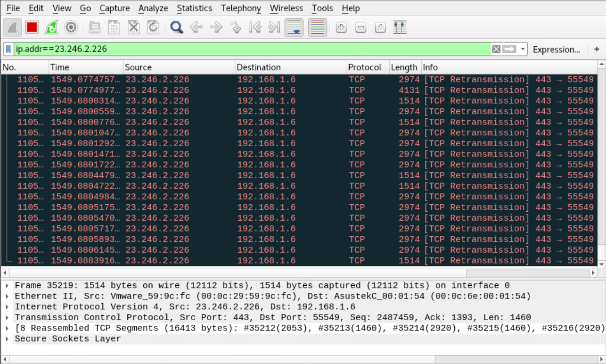

Dell OS10 Load Balancing with LAG Config
In this test case the goal is to create a simple load balancer using a reverse LAG port. The idea is to have one input port which is then mirrored to a logical LAG port and at the other end of the LAG port is a number of security sensors.
Helpful Links
ONIE Network Install Process Overview
My Configuration
General Configuration
- ONIE host is running RHEL 8
- I am using a Dell S4112F-ON for testing
- OS10 10.5.0.2
- PFSense running DNS and DHCP as services
RHEL Release Info
NAME="Red Hat Enterprise Linux"
VERSION="8.0 (Ootpa)"
ID="rhel"
ID_LIKE="fedora"
VERSION_ID="8.0"
PLATFORM_ID="platform:el8"
PRETTY_NAME="Red Hat Enterprise Linux 8.0 (Ootpa)"
ANSI_COLOR="0;31"
CPE_NAME="cpe:/o:redhat:enterprise_linux:8.0:GA"
HOME_URL="https://www.redhat.com/"
BUG_REPORT_URL="https://bugzilla.redhat.com/"
REDHAT_BUGZILLA_PRODUCT="Red Hat Enterprise Linux 8"
REDHAT_BUGZILLA_PRODUCT_VERSION=8.0
REDHAT_SUPPORT_PRODUCT="Red Hat Enterprise Linux"
REDHAT_SUPPORT_PRODUCT_VERSION="8.0"
Red Hat Enterprise Linux release 8.0 (Ootpa)
Red Hat Enterprise Linux release 8.0 (Ootpa)
OS 10 Version
OS10# show version
Dell EMC Networking OS10 Enterprise
Copyright (c) 1999-2019 by Dell Inc. All Rights Reserved.
OS Version: 10.5.0.2
Build Version: 10.5.0.2.468
Build Time: 2019-10-19T00:29:00+0000
System Type: S4112F-ON
Architecture: x86_64
Up Time: 00:03:39
Setup ONIE Prerequisites
See ONIE Install Setup for instructions.
Configure Management Interface
See Configure Management Interface on Dell OS10
Configure Device for Reverse LAG
Physical Configuration
I used the following SFPs
- 1, 1Gb/s copper SFP (Ethernet 1/1/1) for input
- 2, 1Gb/s copper SFPs (Ethernet 1/1/5/Ethernet 1/1/9) and 1, 1Gb/s, fiber SFP (Ethernet 1/1/12) for output
I used the following optics:

Input Port

Output Ports

LAG Configuration
Enable LAG Ports and Input Port
Verify All Interfaces are Running at the Same Speed
All interfaces must be the same speed in a LAG. In my case, the fiber interface was running at 10Gb/s so I brought that down to 1Gb/s by doing the following:
OS10(config)# interface ethernet 1/1/12
OS10(conf-if-eth1/1/12)# speed 1000
OS10(conf-if-eth1/1/12)# <165>1 2019-10-28T19:10:22.616888+00:00 OS10 dn_alm 669 - - Node.1-Unit.1:PRI [event], Dell EMC (OS10) %IFM_OSTATE_DN: Interface operational state is down :ethernet1/1/12
OS10(conf-if-eth1/1/12)#
OS10(conf-if-eth1/1/12)# <165>1 2019-10-28T19:10:29.591467+00:00 OS10 dn_alm 669 - - Node.1-Unit.1:PRI [event], Dell EMC (OS10) %IFM_OSTATE_UP: Interface operational state is up :ethernet1/1/12
Add Interfaces to the Port Channel Group
OS10(config)# interface port-channel 1
OS10(conf-if-po-1)# exit
OS10(config)# interface ethernet 1/1/5
OS10(conf-if-eth1/1/5)# channel-group 1 mode on
OS10(conf-if-eth1/1/5)# <165>1 2019-10-28T19:17:33.746593+00:00 OS10 dn_alm 669 - - Node.1-Unit.1:PRI [event], Dell EMC (OS10) %IFM_OSTATE_UP: Interface operational state is up :port-channel1
OS10(conf-if-eth1/1/5)# exit
OS10(config)# interface ethernet 1/1/9
OS10(conf-if-eth1/1/9)# channel-group 1 mode on
OS10(conf-if-eth1/1/9)# exit
OS10(config)# interface ethernet 1/1/12
OS10(conf-if-eth1/1/12)# channel-group 1 mode on
Configure the Port Channel Hash Algorithm
We want to load balance on the standard network 5 tuple. You can configure this with
OS10(config)# load-balancing ip-selection destination-ip source-ip protocol l4-destination-port l4-source-port
Configure Mirror Port Session from Source to LAG Interface
Next we need to send all the traffic from our "TAP" input interface to our port channel to be load balanced out to all of our listening devices.
OS10(config)# monitor session 1
OS10(conf-mon-local-1)# source interface ethernet 1/1/1
OS10(conf-mon-local-1)# destination interface port-channel 1
OS10(conf-mon-local-1)# no shut
Final Configuration
OS10# show running-configuration
! Version 10.5.0.2
! Last configuration change at Oct 29 14:53:37 2019
!
ip vrf default
!
interface breakout 1/1/13 map 100g-1x
interface breakout 1/1/14 map 100g-1x
interface breakout 1/1/15 map 100g-1x
iscsi enable
iscsi target port 860
iscsi target port 3260
system-user linuxadmin password XXXXX
username admin password XXXXX role sysadmin priv-lvl 15
aaa authentication login default local
aaa authentication login console local
!
class-map type application class-iscsi
!
policy-map type application policy-iscsi
!
interface vlan1
no shutdown
!
interface port-channel1
no shutdown
switchport access vlan 1
!
interface mgmt1/1/1
no shutdown
no ip address dhcp
ip address 192.168.1.20/24
ipv6 address autoconfig
!
interface ethernet1/1/1
no shutdown
switchport access vlan 1
flowcontrol receive on
!
interface ethernet1/1/2
no shutdown
switchport access vlan 1
flowcontrol receive on
!
interface ethernet1/1/3
no shutdown
switchport access vlan 1
flowcontrol receive on
!
interface ethernet1/1/4
no shutdown
switchport access vlan 1
flowcontrol receive on
!
interface ethernet1/1/5
no shutdown
channel-group 1
no switchport
flowcontrol receive on
!
interface ethernet1/1/6
no shutdown
switchport access vlan 1
flowcontrol receive on
!
interface ethernet1/1/7
no shutdown
switchport access vlan 1
flowcontrol receive on
!
interface ethernet1/1/8
no shutdown
switchport access vlan 1
flowcontrol receive on
!
interface ethernet1/1/9
no shutdown
channel-group 1
no switchport
flowcontrol receive on
!
interface ethernet1/1/10
no shutdown
switchport access vlan 1
flowcontrol receive on
!
interface ethernet1/1/11
no shutdown
no switchport
flowcontrol receive on
!
interface ethernet1/1/12
no shutdown
channel-group 1
no switchport
speed 1000
flowcontrol receive on
!
interface ethernet1/1/13
no shutdown
switchport access vlan 1
flowcontrol receive on
!
interface ethernet1/1/14
no shutdown
switchport access vlan 1
flowcontrol receive on
!
interface ethernet1/1/15
no shutdown
switchport access vlan 1
flowcontrol receive on
!
monitor session 1
destination interface port-channel1
source interface ethernet1/1/1
no shut
!
snmp-server contact "Contact Support"
!
telemetry
Findings
The reverse LAG strategy will load balance traffic, but there is a critical problem. The hash algorithm is sensitive to the order of the fields. This means that in a standard TCP conversation as the IP/TCP/UDP source and destinations reverse for inbound and outbound traffic they will always go to different hosts on a five tuple hash. For example, see the below:
Host 1

Host 2

Host 3

If you look at host 1 and host 3 you can see that both sides of the traffic consistently landed on different sessions. Without modifying the guts of how the algorithm itself is implemented, there isn't a way to fix this. IE: The idea isn't going to work.
The reason for this is that security sensors like Bro and Suricata require the complete conversation be sent to a single instance. That is to say, a single instance of Bro or Suricata must see the entire conversation. The configuration above will cause an instance to see only one side of any given conversation.
Other Notes
The default VLAN on our OS10 switch is VLAN 1 and is untagged. The default configuration of a port is Switchport access vlan 1 on all ports (factory default) All ports will show in vlan 1, and vlan 1 will be labeled as the default vlan using command “sho vlan”
If you change the default vlan using the command “default vlan-id” it will change the switchport access vlan on all interfaces that were in the default vlan to the new specified default vlan.
default vlan-id 3
all vlan 1 ports get changed to vlan 3 ports automatically (vlan 3 is the new default vlan), and the interfaces will sho Switchport access vlan 3
If you want any port to be in a different untagged vlan other the default vlan, you must change it via the command “switchport access vlan
On a trunk port, the default vlan is the native vlan. If you want to change the native vlan on trunk port, then you use the command “switchport access vlan
So in my example I sent earlier The default vlan is vlan 1 on all ports except the trunk port. sho run will sho Switchport access vlan 1 on all interfaces except the trunk port because I changed it. I specified vlan 2 as the native vlan for the trunk port only.
Untagged VLAN ==> switchport access vlan 2 Tagged VLAN ==> switchport trunk allowed vlan 1612-1615,3939
Example:
interface ethernet1/1/17
description Node1_Port1
switchport mode trunk
switchport access vlan 2
switchport trunk allowed vlan 1612-1615,3939
spanning-tree port type edge
no shutdown